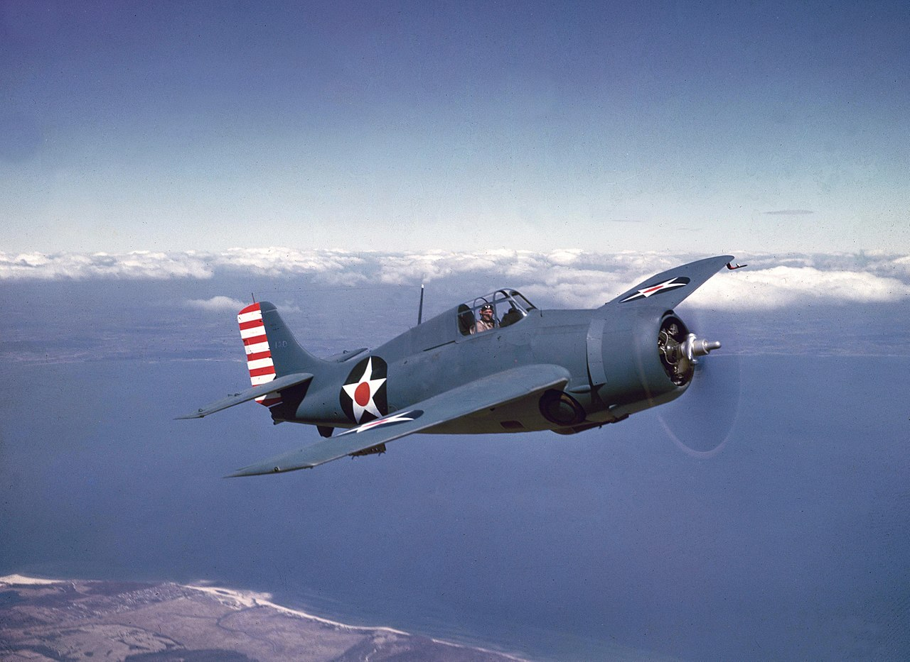
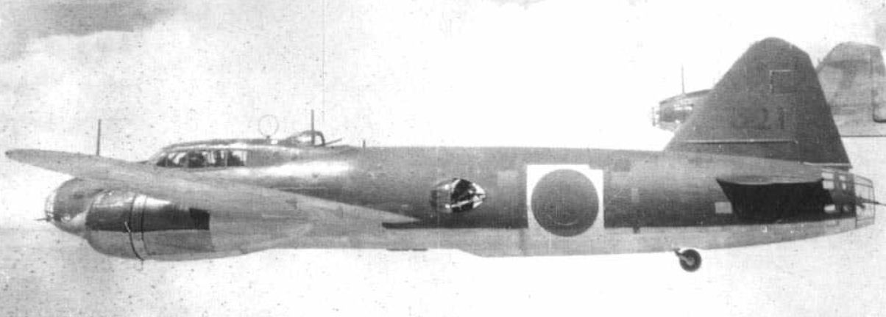
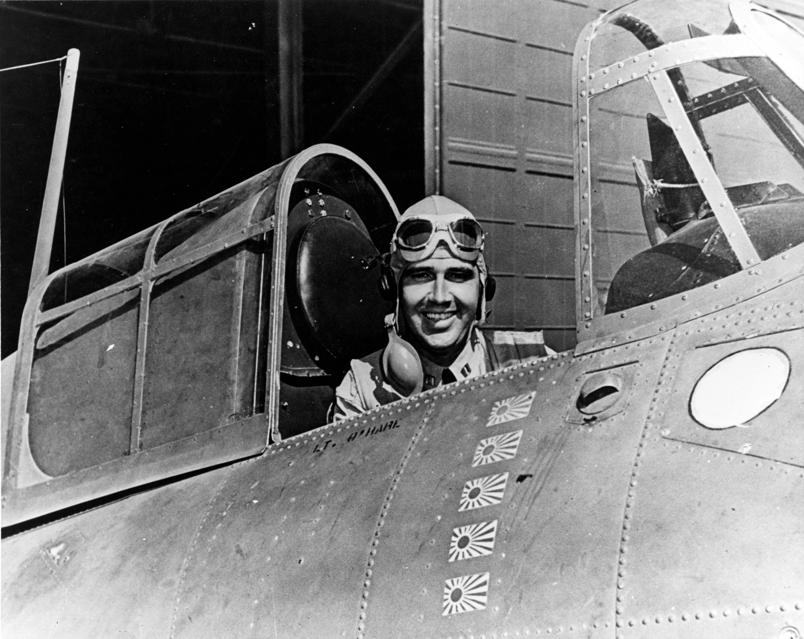
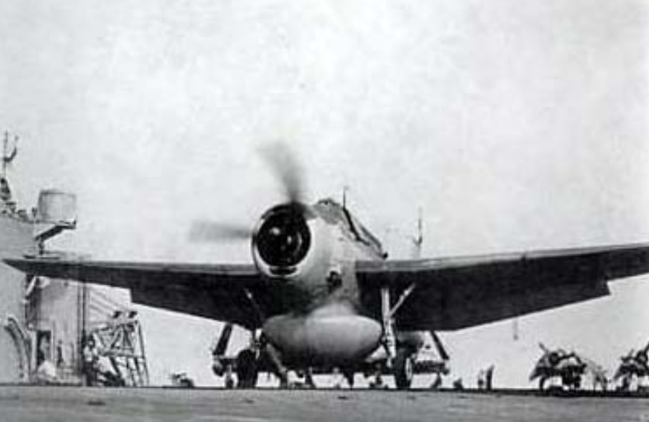
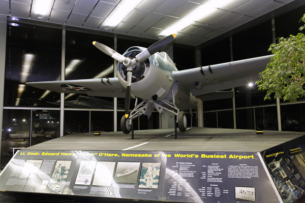
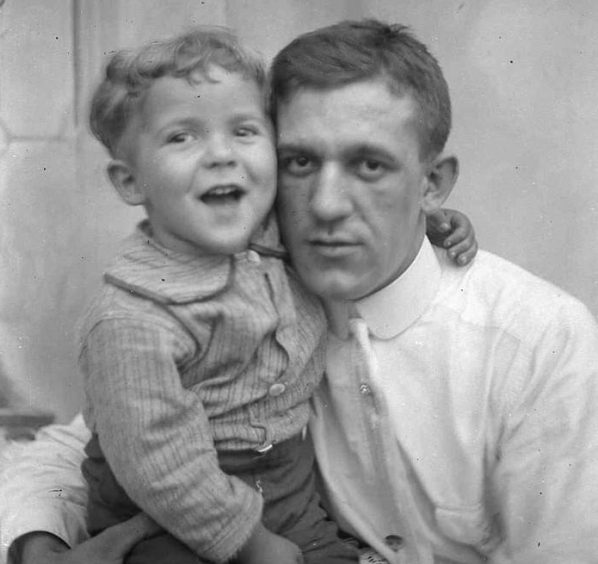

레이더 개발 이야기 (53) - 레이더, Betty, 알 카포네
게시: 2023-11-02T06:30:33+09:00
<레이더 관제 방공의 위력> 그렇게 격추된 2대의 일본군 정찰기 중 최소 1대가 라바울에 미해군 기동부대 목격을 보고한 것이 확실. 왜냐하면 오후 4시 10분 경에 렉싱턴의 레이더 스코프에 렉싱턴 방향으로 날아드는 거대한 편대의 모습이 약 100km 밖 남쪽에 나타났기 때문. 길 대위는 즉각 CAP을 치고 있던 6대의 Wildcat 전투기들을 그 쪽으로 보내 요격하게 했는데, 이들은 약 20분 뒤인 4시 30분에 일본군 폭격기들을 목격하고 Tallyho를 외침. 다행인지 혹은 필연인지 이 9대의 쌍발 폭격기들은 아무런 전투기 호위를 데리고 있지 않았음. 렉싱턴이 라바울 발진 전투기들의 전투 반경에서 훨씬 더 멀리 있었기 때문.

(미해군의 WW2 초기 함재 전투기인 F4F Wildcat. 이후 배치된 F6F Hellcat에 밀려났지만, 기체가 작고 이함에 짧은 거리만 있으면 이함이 가능했으므로 헬캣이 대세가 된 이후에도 정규항모가 아닌 소규모의 호위항모에서는 계속 애용된 소중한 함재 전투기.) Gaylor 대위가 지휘하는 이 6대의 와일드캣은 9대 중 5대의 폭격기를 격추했으나, 4대는 와일드캣의 저항을 기어이 뚫고 렉싱턴과 그 호위함들이 쏘아올리는 맹렬한 대공포에도 아랑곳하지 않고 렉싱턴 위에서 폭탄 투하. 렉싱턴이 30노트 전속력으로 달리며 미친 듯이 지그재그로 선회한 덕분에 폭탄은 모두 빗나감. 그러나 아직 근접신관이 발명되기 이전의 대공포는 역시 비효율적이었는지, 그 맹렬한 화망에도 불구하고 한 대의 폭격기도 격추하지 못했음. 오히려 1대의 와일드캣이 폭격기의 20mm 방어기총에 맞아 격추됨.

(이때 내습한 일본 폭격기는 바로 G4M "Betty") 이 난리통 속에서 렉싱턴은 땟치(Thatch) 소령이 지휘하는 4대의 추가적인 와일드캣을 이함시켜 폭탄을 던지고 도주하는 일본 폭격기들을 추격. 결국 도주하던 5대 중 4대가 이들에게 격추되었고, 살아남아 빠져나가는데 성공하는 듯 했던 1대도 마침 정찰을 마치고 돌아오던 Dauntless 급강하 폭격기와 마주쳐 격추됨. 결국 렉싱턴을 공격했던 9대의 쌍발 폭격기는 모조리 격추된 셈. 그러나 이게 끝이 아니었음. 도주하는 폭격기들을 땟치 소령이 요리하는 동안, 이번에는 정반대인 북쪽에서 또 하나의 거대한 편대가 레이더에 포착됨. 게다가 이번엔 포착 거리도 짧았음. 불과 50km 밖. <미해군 최초의 에이스> 하지만 길 대위는 관제사 학교에서 배운 대로 예비 CAP을 남겨두고 있었음. “Butch” O’Hare 대위가 지휘하는 딱 2대. 다른 동료들이 신나게 일본 폭격기들을 사냥하는 모습을 부러운 듯 손가락 빨며 지켜보던 이들은 길 대위의 유도에 따라 즉각 북쪽으로 날아갔는데, 이들이 막아내야 했던 것도 9대의 쌍발 폭격기. 이때는 이미 상당히 접근하여 렉싱턴의 갑판에서도 이들의 공중전을 볼 수 있었음. 아무리 전투기 vs. 폭격기라고 해도, 2대가 9대를 상대하는 것은 쉽지 않음. 설상가상으로 오헤어 대위의 윙맨인 Dufilho 중위는 사격을 시작하자마자 4정의 기관총에 모조리 탄막힘이 발생. 결국 오헤어 대위 혼자서 9대를 잡아야 했는데, 당시 와일드캣은 4정의 12.7mm Browing AN/M2 기관총 각각에 450발씩만 장탄되어 있었음. 이 기관총의 발사속도는 초당 800발 정도라서, 2초씩 끊어 쏴도 15번 쏘면 끝이라는 소리. 그런데 오헤어는 이걸 해냄. 그는 맨 처음 저 아래 폭격기들을 향해 다이빙할 때 한 쪽 엔진만 집중적으로 노리고 기관총을 긁어대며 돌격. 이 한 번의 다이빙에서 2대를 격추. 오헤어가 2번째 공격을 위해 기수를 돌렸을 때는 이미 5대의 폭격기가 V자 편대를 이루고 렉싱턴 위에 폭탄을 투하기 일보 직전이었는데, 오헤어는 선두의 폭격기에 가장 노련한 조종사와 폭격수가 타고 있을 것이라고 생각하여 측면에서 그 선두 폭격기만 노리고 달려듬. 이때 이미 이 폭격기들은 미함대의 맹렬한 대공포 탄막 속에 있었는데도 오헤어는 아군 대공포에 맞을 위험을 무릅쓰고 그 속에 뛰어들어 선두 폭격기를 격추시킴. 나머지 폭격기들은 폭탄을 투하하긴 했으나 선두기가 불을 뿜으며 격추되자 역시 당황했는지 한 발도 맞추지 못함. 렉싱턴의 모든 수병들은 오헤어의 와일드캣을 향해 열렬히 갈채를 보냄. 심지어 CXAM 레이더 바로 아래 레이더 운용실에 홀로 있던 소위까지도 뛰어나와 오헤어에게 환호를 보냄. 이렇게 오헤어는 3대를 격추하고 2대에 추가로 큰 손상을 입혔는데, 이 2대는 결국 해상에 불시착. 이렇게 5대를 격추한 전과로 인해 오헤어 대위는 WW2 미해군 최초의 에이스에 등극. 뿐만 아니라 미군 최고의 훈장인 Medal of Honor도 받음.

(Edward Henry O'Hare 대위. 저렇게 5대의 일본기를 격추했다는 킬마크를 달고 희희낙낙하고 있지만 실은 3대만 격추시켰고, 1대는 일본군 기지 인근 해상에 불시착. 오헤어 대위 본인은 5대를 격추했고 1대에 치명적인 손상을 입혔으니 6개의 킬마크를 달아야 한다고 주장했으나, 렉싱턴의 함장이 에누리쳐서 5대를 격추한 것으로 인정. 이유는 함장 본인의 눈에 돌아가는 4대의 일본 폭격기가 보였기 때문.)

(오헤어 대위는 이렇게 레이더 및 G4M Betty 폭격기와 연관되어 영광을 얻었으나, 역시 레이더 및 G4M Betty 폭격기로 인해 죽음도 맞이함. 다음 해인 1943년 11월, F6F Hellcat의 등장 이후 주간 공중전에서 도저히 상대가 되지 않는다는 것을 깨달은 일본 해군 항공대가 야간 작전 위주로 전술을 바꾸자 미해군도 그에 대응하여 함재기에 초기 공대공 레이더를 달고 함재 야간 전투기를 운용하려 함. 그러나 작은 전투기에는 도저히 레이더와 그 운용사를 태울 수 없었으므로, 함재 뇌격기인 TBF Avenger에 레이더를 장착하고, Hellcat 전투기 2대를 어벤저 바로 뒤에 따라 붙게 함. 즉, 적기 포착은 어벤저로 하고 격추는 헬캣으로 하려고 한 것. 그 시험 운용에 투입된 오헤어 대위는 혼란스러운 야간 전투 중 아군 어벤저와 G4M 베티 폭격기 간의 기총 사격 속에서 전사. 사진은 APS-20 radar 레이더를 배에 장착한 TBF 어벤저. 다만 이건 1944년 이후 장착된 것이고 1943년의 사진은 아님.)

(시카고의 O'hare 국제공항이 바로 오헤어 대위의 이름을 따서 지은 것. 그의 이름을 따서 개명한 공항인 만큼, 여기에는 완벽한 상태의 F4F 전투기가 전시되어 있음. 실은 오헤어 대위는 시카고와 매우 관련이 깊은데, 그의 아버지는 시카고의 유명 갱 두목인 알 카포네 밑에서 일하는 변호사였음. 나중에 그를 배신하고 알 카포네에 불리한 증언을 재판에서 했기 때문에 결국 갱들에게 살해되었음.)

(변호사 아버지 Edward Joseph O'Hare와 조종사 아들 Edward "Butch" O'hare. 슬프게도 아빠와 아들이 모두 기관총에 맞아 숨을 거둠.) 하지만 이 전투 보고서를 받아든 미해군 참모총창 Ernest J. King 제독은 이 지휘에 대해 역정을 냈다고. 이유는 "전투기 패트롤은 수상함을 보호하는 것이지 퇴각하는 적기를 추격하는 것이 아니다"라는 것. 이런 엄격한 CAP 통제는 나중에 미드웨이 해전에서 일본 해군 전투기 조종사들이 1차로 공격해온 미해군 뇌격기들을 무절제하게 추격하며 사냥한 것과 대비되는 것이었으며, 미드웨이 해전의 결과가 단순한 운빨이 아니었다는 것을 잘 보여줌.